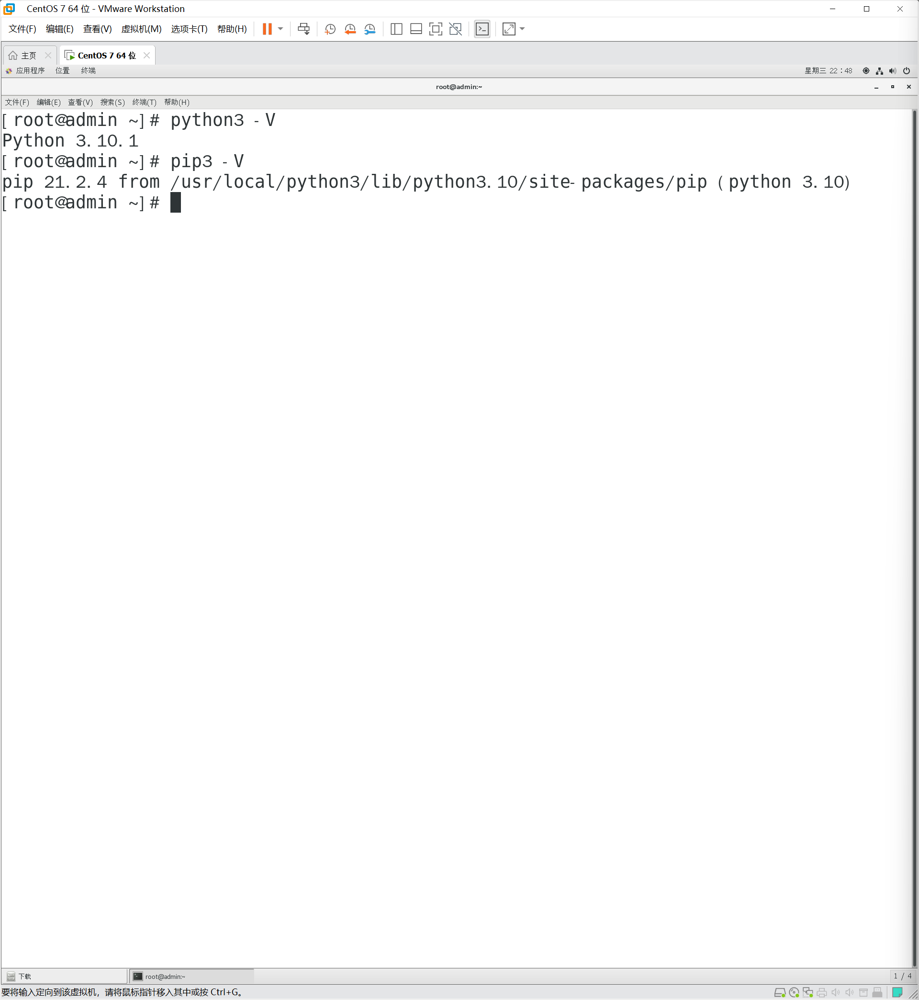

centos7 安装python3.10.1
Python官网版本https://www.python.org/downloads/source/
下载.tar.xz包就可以了。其实下面的2个包其一都可以使用 Python-3.10.0.tgz （这个不是编译过的东西，不能解压之后直接使用） Python-3.10.0.tar.xz (这个是pthon的源码)
下载
下载安装包
wget https://www.python.org/ftp/python/3.10.1/Python-3.10.1.tar.xz执行解压命令
tar -xvJf [文件名]
安装编译相关工具
在解压后目录中执行
yum -y groupinstall "Development tools"yum -y install zlib-devel bzip2-devel openssl-devel ncurses-devel sqlite-devel readline-devel tk-devel gdbm-devel db4-devel libpcap-devel xz-develyum install libffi-devel -y
编译安装
创建编译安装目录
mkdir /usr/local/python3./configure --prefix=/usr/local/python3make && make install
创建软连接
ln -s /usr/local/python3/bin/python3 /usr/local/bin/python3ln -s /usr/local/python3/bin/pip3 /usr/local/bin/pip3
验证
python3 -V
pip3 -V

修改下载源
cd ~mkdir .pipcd .pipvim pip.conf[global] index-url=http://mirrors.aliyun.com/pypi/simple/ [install] trusted-host=mirrors.aliyun.com